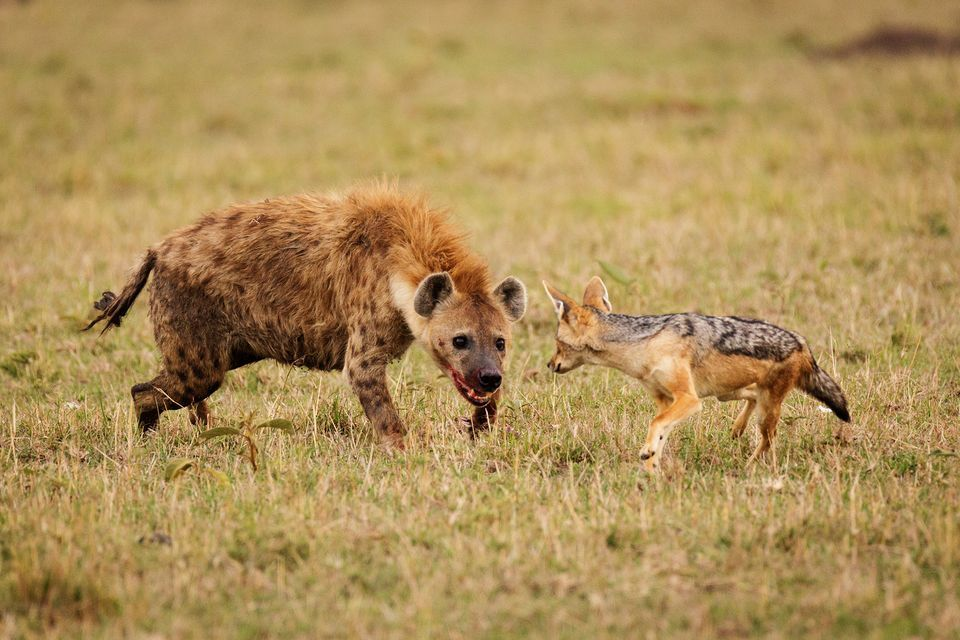

Navegaon National Park is a national park located in the Gondia district of Maharashtra, India. Navegaon, a popular forest resort in the Vidarbha region, the easternmost part of Maharashtra, was built in the 18th century. The picturesque lake set amidst lush green hills at Navegaon, has a watch-tower beside it. One can get a bird's eye view of the surrounding forest and marvel at the exciting wildlife from the watch-tower which consists of a deer park, Dr. Salem bird sanctuary, and three exotic gardens. The Dr Salim Ali Bird Sanctuary, Navegaon is home to almost 60% of the bird species found in entire Maharashtra. Every winter, flocks of beautiful migratory birds visit the lake—a rare treat for the eyes. The national park has diverse type of vegetation ranging from dry mixed forest to moist forest. The forest type is 5 A/C3. Southern tropical dry deciduous forest. The most unique experiences of the Navegaon National Park that you will have are going on a jungle safari, staying in a tree top house and riding a sail boat in the lake.
|  | |
| Location : | Gondia district, Maharashtra, India |
| Coordinates | 20°56′N 80°10′E |
| Area | 133.88 km2 (51.69 sq mi) |